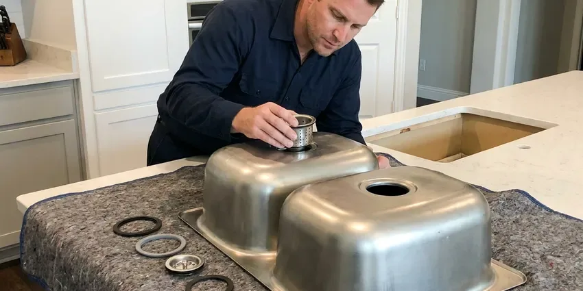

Grease Trap Repair in Daphne, AL
Is your grease trap failing in Daphne, AL? BRV Plumbing offers prompt, professional repair solutions for both commercial and residential properties.
- Fast, Reliable Service
- Licensed Plumbers
- Upfront Pricing
- Satisfaction Guaranteed
Your Trusted Source for Grease Trap Repair in Daphne, AL.
Reach out to BRV Plumbing today for a free estimate on your grease trap repair needs.
Your Go-To for Grease Trap Repair in Daphne, AL
When your grease trap isn't working right, it can lead to serious plumbing issues and costly fines. BRV Plumbing offers prompt and efficient grease trap repair throughout Daphne, AL, helping you avoid backups and maintain a sanitary environment.
Our expertise includes:
- Diagnose and clear severe grease trap clogs.
- Repair damaged baffles, lids, and plumbing connections.
- Replace corroded or failing grease trap components.

Additional Kitchen Plumbing Services in Daphne, AL
Our kitchen plumbing services in Daphne, AL cover sinks, disposals, dishwashers, and grease traps so your kitchen stays clean, safe, and fully functional.


Professional kitchen sink installation, Daphne


Customers
Why Choose BRV Plumbing for Grease Trap Repair in Daphne, AL?
We use specialized equipment to pinpoint the exact cause of your grease trap issue, whether it's a structural failure, accumulation of FOG, or a blockage in the connected drain lines. Our goal is to provide a lasting repair, not just a temporary fix.
- Code Compliance, We ensure all repairs meet Alabama plumbing codes and local health department regulations for grease trap systems.
- Prevent Backups, Properly functioning grease traps prevent costly and unsanitary sewer backups in your kitchen and property.
- System Longevity, Timely repairs extend the life of your grease trap and connected plumbing infrastructure.
Citywide Coverage
No matter where you are located in Daphne, our team can quickly dispatch to your property. We understand the urgency of grease trap issues and prioritize rapid response across the entire Daphne area.
Experienced Team
The technicians at BRV Plumbing are skilled in diagnosing complex grease trap problems. They have seen every type of blockage and structural failure, ensuring an accurate assessment and efficient repair every time.
Safety-First Approach
We ensure that all grease trap repairs are not only effective but also comply with all local health and environmental regulations. Our methods prevent cross-contamination and ensure the safe operation of your plumbing system.
Trusted Certified Daphne Plumbing Services Professionals
At BRV Plumbing, we take pride in providing certified plumbing services throughout Daphne, AL. Backed by leading industry credentials, our experienced plumbers combine technical skill with genuine customer care. Whether it is repair, installation, or maintenance, we follow strict safety and quality standards to deliver long-lasting results you can trust.
Call Us Now PHCC Plumbing Contractor Recognition
PHCC Plumbing Contractor Recognition Better Business Bureau (BBB) Accreditation
Better Business Bureau (BBB) Accreditation Angi Certified Pro
Angi Certified Pro ISO 9001 Quality Management Certification
ISO 9001 Quality Management CertificationDependable Grease Trap Repair Services in Daphne, AL
Commercial Grease Trap Repair in Daphne
For restaurants, cafeterias, and food service establishments in Daphne, a functioning grease trap is non-negotiable. We offer emergency and scheduled repairs for all commercial grease interceptors, addressing issues like clogged lines, broken baffles, or structural damage. Our team understands the high volume of FOG in commercial settings and provides robust solutions to prevent operational downtime and ensure health code compliance. We work quickly to minimize disruption to your business.

Residential Grease Trap Repair in Daphne, AL
Even residential properties in Daphne, AL can benefit from a grease trap, especially those with septic systems or older plumbing. If your home's under-sink grease trap is backing up or emitting foul odors, it indicates a need for repair. We service smaller, often plastic or fiberglass, residential units, clearing blockages and fixing minor leaks to protect your home's drain lines from grease accumulation. This prevents costly main line clogs down the road.
Grease Interceptor Clog Removal in Daphne
The most common grease trap issue is a severe clog caused by accumulated fats, oils, and grease. Our plumbers in Daphne use specialized hydro-jetting equipment to effectively break down and flush out stubborn blockages from grease traps and their connecting drain lines. This method is highly effective for restoring full flow and preventing immediate recurrence, much more so than chemical drain cleaners which can damage pipes.
Damaged Baffle and Lid Repair in Daphne, AL
The internal baffles of a grease trap are crucial for separating FOG from wastewater. If these are damaged or dislodged, the trap becomes inefficient, allowing grease to escape into the sewer system. We repair or replace broken baffles and cracked lids in Daphne, AL, ensuring your trap functions as designed. A secure lid also prevents odors and keeps pests out, maintaining hygiene around the unit.
Leaking Grease Trap Repair in Daphne
A leaking grease trap can cause significant property damage and environmental concerns, often indicating a crack in the tank or a faulty seal at pipe connections. Our team in Daphne quickly identifies the source of the leak and performs precise repairs, whether it involves sealing cracks with epoxy, replacing gaskets, or re-piping sections. Addressing leaks promptly prevents costly structural damage and potential contamination.
Emergency Grease Trap Services in Daphne, AL
Grease trap failures often happen at the worst possible time, leading to immediate health hazards and operational shutdowns, especially for businesses in Daphne, AL. BRV Plumbing offers emergency grease trap repair services to address critical issues like severe backups or overflowing traps. Our rapid response team is available to diagnose and resolve urgent problems, helping you resume normal operations quickly and safely.
Grease Trap Drain Line Repair in Daphne
Beyond the trap itself, the drain lines leading to and from the grease trap can also suffer damage or blockages. These lines are particularly susceptible to grease build-up. In Daphne, we diagnose and repair issues within these connecting pipes, including clearing FOG accumulation, fixing collapsed sections, or repairing root intrusions. Ensuring these lines are clear is vital for the overall efficiency of your grease trap system.

Cost-Effective Grease Trap Solutions in Daphne, AL
At BRV Plumbing, we understand that grease trap repairs can be an unexpected expense. We provide transparent, upfront pricing for all our services in Daphne, AL, with no hidden fees. Our goal is to offer cost-effective and durable repair solutions that prevent future breakdowns, saving you money in the long run. We focus on repairs that extend the life of your existing system whenever possible, avoiding premature replacement costs.
Grease Trap Repair Near Me in Daphne, AL
When you search for "grease trap repair near me" in Daphne, AL, you want a local company that understands the specific challenges of plumbing in our area. BRV Plumbing is deeply familiar with Alabama's climate and its impact on underground plumbing, including the expansion and contraction of pipes due to temperature swings, which can stress grease trap connections.
Our proximity to all parts of Daphne allows us to respond quickly to your grease trap emergencies. We pride ourselves on being the trusted local experts for both residential and commercial grease trap repair, offering reliable service that you can count on when you need it most.
BRV Plumbing at a Glance
- Fully licensed plumbing team covering Daphne, AL
- 24/7 emergency service with same-day scheduling
- Clear written estimates, no hidden fees
- 4.8-star rated by 549+ Alabama customers
Daphne Map
Daphne Information
- Population
- 30,321
- Area codes
- Local
- Service area
- Daphne and communities within 40 miles
- Nearby
- Mobile, Enterprise, Prattville, Montgomery
For homes and businesses in Daphne, AL, where cooking is central to family life and local cuisine, efficient grease trap function is critical to prevent costly plumbing issues and comply with environmental standards.
Expert Services
Trust our professionals for reliable BRV Plumbing solutions in Daphne, AL.
Our Specialized Plumbing Services in Daphne, AL
At BRV Plumbing, we provide a complete range of plumbing services across Daphne, AL. From leak detection to full system installations, our team ensures fast, precise, and affordable service for both residential and commercial properties. Explore our core services below:


How Our Grease Trap Repair Process Works in Daphne, AL
Our grease trap repair process is designed to be efficient, thorough, and minimally disruptive to your daily operations or home life in Daphne.
Request a Quote
Call (256) 391-9413 or fill out our online form to schedule your grease trap repair service. We will gather initial information about your issue and set up a convenient appointment time.
Diagnosis & Inspection
Our certified plumber will arrive on site to thoroughly inspect your grease trap and connected plumbing. We use advanced diagnostic tools to pinpoint the exact cause of the problem, whether it's a clog, leak, or component failure.
Expert Repair
Based on our diagnosis, we will explain the repair options and provide a clear, upfront estimate. Once approved, our team will perform the necessary repairs using high-quality parts and industry-best practices, ensuring a lasting solution.
Frequently Asked Questions About Grease Trap Repair in Daphne
The cost of grease trap repair in Daphne varies widely depending on the nature and severity of the problem. Minor clogs might range from $200-$400, while more extensive repairs like replacing baffles or fixing large leaks could be $500-$1500 or more. We provide a detailed estimate after a thorough inspection.
Generally, "grease trap" refers to smaller, indoor units (often under-sink) with capacities up to 100 gallons, primarily used in residential settings or small commercial kitchens. "Grease interceptor" refers to larger, outdoor units (often buried) with capacities of several hundred to thousands of gallons, typically used for high-volume commercial food service establishments. Both serve the same function of separating FOG.
Minor repairs like clearing a clog or replacing a gasket typically do not require a permit. However, significant structural repairs, replacing major components, or any work that alters the original plumbing configuration of the grease trap might require a permit from the local Daphne building department. We will advise you if a permit is needed.
Common signs include slow draining sinks, foul odors emanating from drains or the trap itself, backups in kitchen drains, or visible leaks around the grease trap unit. For businesses, frequent health code violations related to FOG can also indicate a failing trap.
Regular grease trap cleaning and maintenance are the best preventative measures. Scrape food scraps into the trash before washing dishes, avoid pouring FOG down the drain, and consider installing strainers. Regular professional inspections can also catch small issues before they become major problems.
Yes, our plumbers are experienced in repairing a wide range of grease trap types, including passive hydromechanical units, automatic grease removal units (AGRUs), and large gravity grease interceptors. We work with common brands like Zurn, Big Dipper, Thermaco, and Schier, among others.
The primary cause is the accumulation of FOG (Fats, Oils, and Greases) which solidifies and creates blockages. Other causes include structural damage from age or impact, corrosion of internal components, improper installation, or lack of regular maintenance and cleaning.
Most standard grease trap repairs, such as clearing a clog or fixing a minor leak, can be completed within 2-4 hours. More complex issues involving structural repairs or extensive pipe work might take longer, potentially requiring a full day. We always aim for efficient service.
What People Are Saying About Our Plumbing Experts?

Mark T.
When our office needed drain cleaning, BRV Plumbing provided quick, reliable service. The plumber arrived on time and made sure every drain flowed perfectly before leaving. Very satisfied.
Drain Cleaning · Dothan, AL
Sofia M.
Two new toilets installed in one visit, no mess left behind, and the tech even adjusted a faucet he noticed was dripping. Fair pricing and really friendly.
Toilet Installation · Prattville, AL
James P.
Our commercial plumbing system had a leak under the sink, and BRV Plumbing handled it professionally. The plumbers arrived quickly and restored everything without disruption to our customers.
Commercial Plumbing · Tuscaloosa, ALRobert G.
The trenchless sewer replacement saved our front yard. They walked us through the camera inspection footage first so we knew exactly what we were paying for.
Sewer Line Replacement · Montgomery, ALLaura S.
I scheduled a water heater replacement, and the team made the process smooth and affordable. The new unit works perfectly, and they cleaned up after completing the job.
Water Heater Replacement · Enterprise, AL
Emily R.
I called BRV Plumbing for plumbing repair, and the technician was fast, polite, and thorough. They explained the problem clearly and fixed it the same day. I will definitely hire them again. Highly recommended!
Plumbing Repair · Dothan, AL